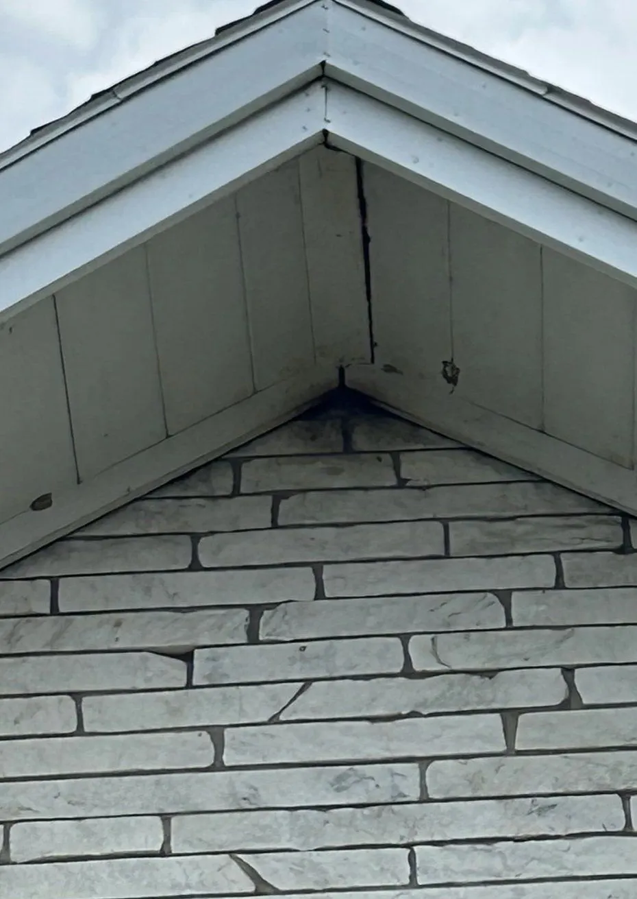
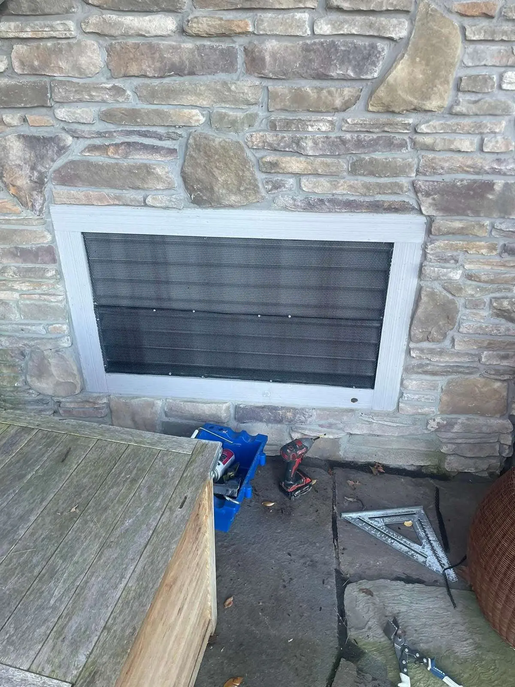
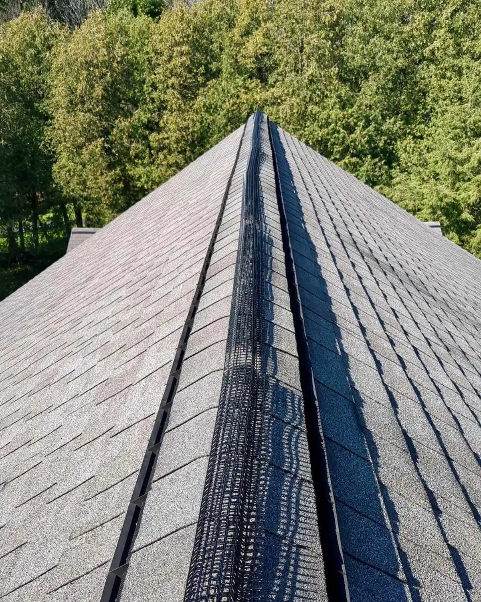
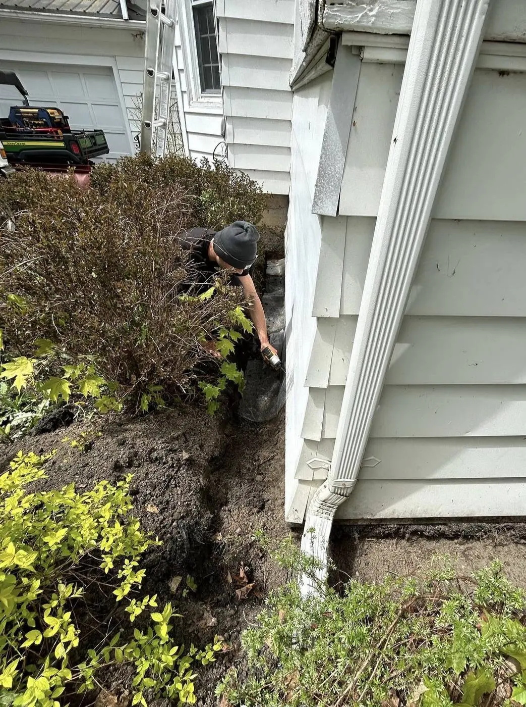

Exclusion.
The seal that lasts.
Removal without sealing is a repeat visit. Exclusion closes the building — the X that means it stays shut.
What exclusion is
Exclusion is the closing of the building: every entry an animal is using, and every entry it would use next, sealed with durable, animal-proof materials. It is the step that ends wildlife problems rather than pausing them. A removal answers the question of the animal inside; exclusion answers the question of the building.
- Entry-point survey — roofline, vents, foundation, doors, utility penetrations
- Durable, animal-proof sealing materials, matched to the entry
- Every seal listed in writing — what was sealed, and with what

How a sealing job runs
Sequence matters. Secondary gaps — the entries not currently in use — are sealed first. Active entries are fitted with one-way exits where the species allows them, so the animals inside leave on their own and cannot return. Only when the building is confirmed empty are the active entries sealed permanently. Sealing in the wrong order traps animals inside, which is why the survey and the sequence are set out in writing before work begins. Monitoring follows, to confirm the seals hold and the activity has stopped.
What we seal
Foundation gaps, door sweeps, vent covers, pipe and wire penetrations, garage and sill gaps, soffit and fascia openings, and roofline gaps — the full list for your building comes from the survey. Materials are matched to the entry: steel mesh over vent openings, guards at rooflines, and solid closure at joints, fixed to resist the animal it excludes. Raccoon work in particular is specified for an animal that pulls.


Materials
Exclusion fails at the material before it fails at the plan. Light mesh is chewed, foam is tunnelled through, and loose covers are lifted by raccoons. The materials used here are the ones that hold: galvanised steel mesh, metal guards and covers, and fixings that bite into sound material. Each seal is recorded with its material, so a later check can verify the seal against the list.
Burrow Defense
For porches, decks, and sheds, the seal goes underground. Burrow Defense is our buried barrier: a trench dug one foot deep and one foot out around the base, a steel mesh barrier set in the trench, then reburied. A long-term block against burrowing wildlife getting underneath.

If the attic was damaged: Attic Restoration →